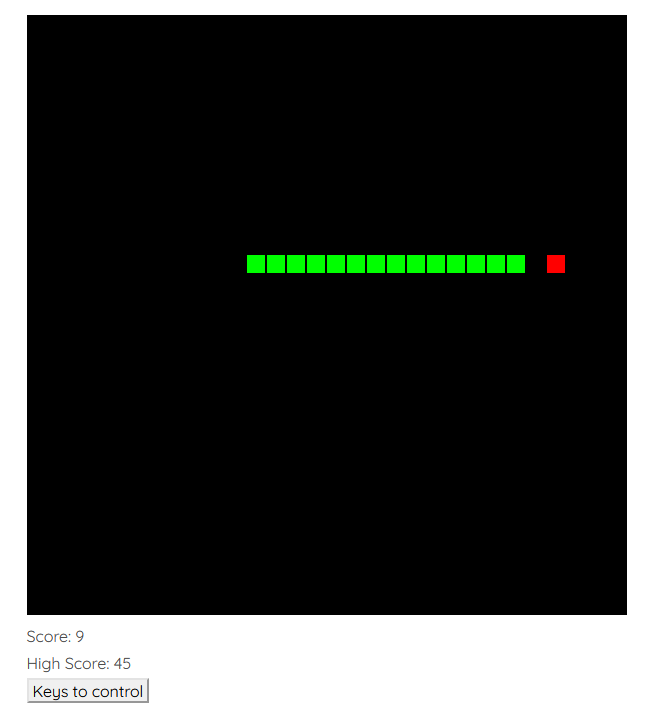

Control <<
Previous Next >> SSO
AI and CAD
Reinforcement Learning (強化學習):
https://www.davidsilver.uk/teaching/
https://neptune.ai/blog/reinforcement-learning-applications
強化學習的實務應用:
自駕車, 工業自動化 (高效節能), 金融貿易 (前景預測), 自然語言處理 (翻譯, 會議摘要, 自動答詢), 醫療保健 (自動診斷), 工程應用 (最佳化設計與製造), 機電設備自動控制.
https://wiki.pathmind.com/deep-reinforcement-learning
深度強化學習應用領域:
Robotics, Industrial Operations, Supply Chain & Logistics, Traffic Control, Bidding & Advertising, Recommender Systems, Load Balancing, Augmented NLP.
https://www.amazon.science/latest-news/3-ways-reinforcement-learning-is-changing-the-world-around-you
強化學習帶來的三大變革:
新聞推介系統, 高效能源配置, 機器人領域.
Optimize Robots Physical Design byParameterization in Deep Reinforcement Learning.pdf
When designing robots, it is a common practice to decide some mechanical pa-
rameters prior to carrying out any detailed design. However, it is often difficult to
find the optimal values for those parameters. In most of reinforcement learning
tasks, the agent is learning a control policy in a fixed environment. This project
aims to enable the agent to modify some environment parameters related to its
physical configuration, i.e. the agent is able to evolve to a better version that is
more suitable for a certain task. We proposed methods to argument the reward
function to influence the direction of evolution according to our preference. We
discovered how the joint learning of policy and optimal physical configuration will
impact the learning efficiency. We also found some interesting relationship between
the learning of control policy and the evolution of the physical configuration.
Q Learning:
https://cedar.buffalo.edu/~srihari/CSE574/Chap15/15.3-Q-Learning.pdf
https://medium.com/pyladies-taiwan/reinforcement-learning-%E9%80%B2%E9%9A%8E%E7%AF%87-deep-q-learning-26b10935a745
Artificial Intelligence:
https://www.goodfirms.co/blog/importance-artificial-intelligence-computer-aided-design
AI 在電腦輔助設計領域的重要性:
Traditional CAD software solutions are parametric, which demands extensive planning. This process is time-consuming as a single property can change the whole design, and eventually, it can slow down the work-flow.
CAD today covers several engineering functions ranging from simple drawings to 3D models. With the incorporation of AI, the process of designing becomes a bit easier with AI taking the lead to integrate the manufacturing aspects or the engineering aspects, predict and perform the tasks with its own intelligence. This suits all types of design, whether it is a new design, or an innovative design, or a routine design.
AI is capable of storing knowledge, and this knowledge-based information, when incorporated with CAD/CAM procedure, automates several functions.
The AI algorithm can itself make the required changes in the design without the intervention of the humans.
The testing and simulations process can be completed with the help AI, which majorly cuts down the design time.
The implementation of CAD with AI technology is capable of delivering ergonomic engineering.
https://www.digitalengineering247.com/article/deep-learning-meets-3d-modeling/engineering-resource-center
The application of machine learning, also known as deep learning, to computer-aided design (CAD) is gradually becoming commonplace. Almost all mainstream CAD programs—Autodesk Fusion and SOLIDWORKS, to name but two—include some form of generative design (衍生式設計) or topology optimization (拓撲最佳化) tools. This allows the software to employ AI-like algorithms to identify the best shapes for the designer’s stated purpose, whether to reduce weight or to counterbalance the anticipated stress (usually it’s a combination of both). 即達成少負擔 (less burden), 多建樹 (more achievements) 的設計目標.
https://www.autodesk.com/autodesk-university/content/future-design-powered-ai-mike-haley-2019
電腦輔助設計練習題:
在網際 Python 程式環境中, 以下程式採用直覺邏輯執行貪食蛇遊戲, 從已知經驗最高紀錄得分為 45 分, 請問: 可以採用人工執行或機器學習方法, 找出在此一遊戲環境中所能取得的最高極限得分嗎?
可以結合 Brython 當前端, 透過 AJAX 與後端 Flask (Python) + Rust 執行此一貪食蛇強化學習訓練嗎?
參考資料:
https://github.com/mdecourse/Snake-Reinforcement-Learning
Q-Learning Algorithm
Path_finding_q_learning.py
Autonomous Agents in Snake Game via Deep Reinforcement Learning.pdf
https://courses.grainger.illinois.edu/cs440/fa2020/MPs/mp7/assignment7.html
2016_Exploration of Reinforcement Learning to SNAKE.pdf
Train a snake with reinforcement learning algorithms.pdf
https://github.com/python-engineer/snake-ai-pytorch
Deep Reinforcement Learning for Snake.pdf
2019_Implementation of artificial intelligence in Snake game using genetic algorithm and neural networks.pdf
2020_Battlesnake Challenge- A Multi-agent Reinforcement Learning Playground with Human-in-the-loop.pdf
https://davideliu.com/2020/01/24/teaching-ai-to-play-snake-with-reinforcement-learning/
https://github.com/mdecourse/Snake-Battle-Royale
https://towardsdatascience.com/snake-played-by-a-deep-reinforcement-learning-agent-53f2c4331d36
https://towardsdatascience.com/how-to-teach-an-ai-to-play-games-deep-reinforcement-learning-28f9b920440a
https://www3.hs-albsig.de/wordpress/point2pointmotion/2020/10/09/deep-reinforcement-learning-with-the-snake-game/
https://medium.com/@hugo.sjoberg88/using-reinforcement-learning-and-q-learning-to-play-snake-28423dd49e9b
https://www.youtube.com/watch?v=PJl4iabBEz0 (part1)
https://www.youtube.com/watch?v=5Vy5Dxu7vDs (part2)
https://www.youtube.com/watch?v=6pJBPPrDO40 (part3)
https://www.youtube.com/watch?v=VGkcmBaeAGM (part4)
https://www.youtube.com/watch?v=yp826Ybh4rU
In Rust:
https://github.com/SLMT/rust-snake
https://github.com/prajwaldp/rust-snake-game
https://github.com/RodionChachura/rust-js-snake-game
https://github.com/leocavalcante/rust-snake
https://github.com/tensor-programming/snake-tutorial
https://github.com/AlexRiosJ/rust_snake

Brython snake eater game:
# 從 browser 導入 document 並設為 doc
from browser import document as doc
# 使用者可以透過 window 當作介面使用其他 Javascript 功能
from browser import html, window
# 用於定時執行特定函式
import browser.timer
# 導入數學模組
import math
# 導入亂數模組
from random import random, randint
def update_score(new_score):
global high_score
score_doc.innerHTML = "Score: " + str(new_score)
if new_score > high_score:
high_score_doc.innerHTML = "High Score: " + str(new_score)
high_score = new_score
def eat(px, py, ax, ay):
global xv, yv, pre_pause, paused
# (px, py) go to (ax, ay) through incremented xv, yv
if ax != px or ay != py:
if ax > px and not paused:
xv = 1
yv = 0
if ax < px and not paused:
xv = -1
yv = 0
if ay > py and not paused:
xv = 0
yv = 1
if ay < py and not paused:
xv = 0
yv = -1
def game():
global px, py, tc, gs, ax, ay, trail, tail, score
# px 為 snake 第一個點的 x 座標, 增量值為 xv
px += xv
py += yv
# 允許穿越四面牆, 以 tc 表示牆面座標極限
# 若 px 為負值則設定為 tc -1, 表示 tc 為 x 方向 limit
# x 座標方向的穿牆設定
if px < 0:
px = tc-1
if px > tc-1:
px = 0
# y 座標方向的穿牆設定
if py < 0:
py = tc-1
if py > tc-1:
py = 0
ctx.fillStyle = "black"
# 畫布填入黑色
ctx.fillRect(0, 0, canvas.width, canvas.height)
# snake 為 lime 色
ctx.fillStyle = "lime"
# trail 為數列, 代表 snake 各節 [x,y] 座標
# trail = [[x0,y0], [x1, y1], [x2, y2]...]
# gs 為方塊邊長 pixel 數
for i in range(len(trail)):
# https://developer.mozilla.org/zh-TW/docs/Web/API/Canvas_API/Tutorial/Drawing_shapes
# fillRect(x, y, width, height)
ctx.fillRect(trail[i][0]*gs, trail[i][1]*gs, gs-2, gs-2)
# 若 snake 第一節座標 (px, py) 穿過身體任一節, 則 score 歸零
if trail[i][0] == px and trail[i][1] == py:
score = score if paused else 0
# snake reset 為五節
tail = 5
# trail 數列以碰到的 [px, py] 座標數列插入作為第一節
trail.insert(0, [px, py])
while len(trail) > tail:
# pop() 內建移除數列最後一個 element
trail.pop()
# ax, ay 為紅點座標
# 當 snake 第一節座標[px, py] 與紅色食物座標 [ax, ay] 重合
# 則 tail 增量, 即多一節且得分加 1, 然後食物座標 [ax, ay] 重新以亂數定位
if ax == px and ay == py:
tail += 1
ax = math.floor(random()*tc)
ay = math.floor(random()*tc)
score += 1
# [ax, ay] is known here
# [px, py] is where the head of the snake
# xv needed to be incremented from px to ax first
# and yv needed to be incremented from py to ay
eat(px, py, ax, ay)
# 更新計分顯示
update_score(score)
ctx.fillStyle = "red"
ctx.fillRect(ax*gs, ay*gs, gs-2, gs-2)
def key_push(evt):
global xv, yv, pre_pause, paused
key = evt.keyCode
# 37 is left arrow key
# 74 is j key
if key == 74 and not paused:
xv = -1
yv = 0
# 38 is up arrow key
# 73 is i key
elif key == 73 and not paused:
xv = 0
yv = -1
# 39 is right arrow key
# 76 is l key
elif key == 76 and not paused:
xv = 1
yv = 0
# 40 is down arrow key
# 77 is m key
elif key == 77 and not paused:
xv = 0
yv = 1
# 32 is pause key
# 80 is p key
elif key == 80:
temp = [xv, yv]
xv = pre_pause[0]
yv = pre_pause[1]
pre_pause = [*temp]
paused = not paused
def show_instructions(evt):
window.alert("keys to control: i=up, m=down, j=left, l=right, p=pause")
# 利用 html 建立 canvas 超文件物件
canvas = html.CANVAS(width = 600, height = 600)
canvas.id = "game-board"
brython_div = doc["brython_div"]
brython_div <= canvas
score_doc = html.DIV("score")
score_doc.id = "score"
brython_div <= score_doc
high_score_doc = html.DIV("high-score")
high_score_doc.id = "high-score"
brython_div <= high_score_doc
button = html.BUTTON("Keys to control")
button.id = "instructions-btn"
brython_div <= button
score = 0
high_score = 0
px = py = 10
# gs*tc = canvas width and height
gs = 20
tc = 30
ax = ay = 15
xv = yv = 0
trail = []
tail = 5
pre_pause = [0,0]
paused = False
ctx = canvas.getContext("2d")
doc.addEventListener("keydown", key_push)
instructions_btn = doc["instructions-btn"]
instructions_btn.addEventListener("click", show_instructions)
browser.timer.set_interval(game, 1000/15)
Control <<
Previous Next >> SSO